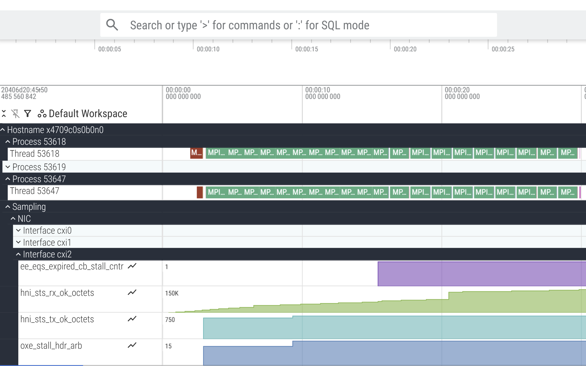
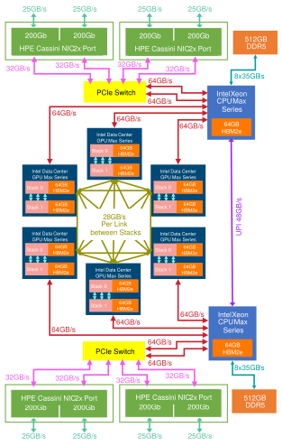
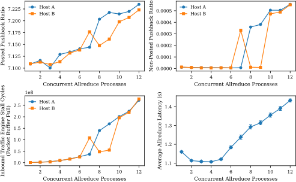

Extending THAPI with CXI Hardware Counter Sampling
High-resolution NIC telemetry inside time-aligned traces
Nathan S. Nichols , Thomas Applencourt
Argonne National Laboratory
AI-for-Science needs fast collectives at scale
- Training/inference hinge on collectives (all-reduce, all-to-all) across racks
- Small congestion events → minutes lost at 10k+ ranks
- Need time-aligned NIC telemetry next to app phases to see when/why it slows
Examples driving urgency
- AERIS — diffusion-based Earth system forecasting (10,080 Aurora nodes, 12 ranks per node)
- MProt-DPO — multimodal protein design with Direct Preference Optimization (3,200 Aurora nodes, 12 ranks per node)
- ORBIT-2 — ViT-based climate downscaling (up to 8,192 Frontier nodes, 8 ranks per node)
Challenges: congestion is real + tools fall short
- Congestion exists: pushback/stalls show up in real AI-for-science runs
- Post-hoc aggregates ≠ timelines: miss phase-specific anomalies
- Tool gap: few ways to see CXI counters time-aligned with app traces
What we built (THAPI + CXI sampling)
- THAPI integrates with tracing (LTTng-UST) and exports to Perfetto
- New plugin samples CXI (Cassini) NIC counters and time-aligns with app events
- Default 10 Hz → negligible incremental overhead (paper)
CXI (Cassini) Counter Landscape
- Throughput:
hni_sts_tx_ok_octets,hni_sts_rx_ok_octets - Pushback:
parbs_tarb_pi_{posted,non_posted}_{blocked_cnt,pkts} - Stalls/Timeouts: e.g.,
hni_rx_stall_ixe_pktbuf_1, selected timeout counters
See CPE Cassini Performance Counters User Guide for detailed counter definitions.
Interactive Perfetto timeline
Perfetto Screenshot (just-in-case demo breaks)

Perfetto UX screenshot.Time-aligned timeline in Perfetto
- One counter track per (host, interface, counter)
- Tracks start at zero (offset by first sample) for readability
- Zoom/SQL to isolate bursts & anomalies across phases
How to use it (iprof)
- Run:
iprof --timeline --sample -- ./a.out - Knobs:
LTTNG_UST_CXI_SAMPLING_CXI_PERIOD_MS=100 LTTNG_UST_CXI_COUNTERS_FILE=foo.txt - Perfetto export produced automatically in timeline mode
Implementation (1/2)
- LTTng-UST tracepoints for CXI sampling integrated in THAPI pipeline
- Device files probed; per-interface readers tied to sampling loop
- Emits change-driven counter events to limit trace volume
Implementation (2/2)
- Derived in viewer: bytes/s from octet deltas; pushback
blocked_cnt/pkts - Tracks per (host, interface, counter); zero-offset for readability
- Designed for negligible overhead at default 10 Hz
Congested Collectives

- Up to 12 concurrent jobs
- 16 ranks/job across 2 nodes
- Message size 512 MiB per rank
- Track default metrics
Congested Collectives timeline
Congested Collectives Findings

Congested collectives behavior under varying job counts.Congested Collectives Findings — details
- Inbound traffic engine stall counters grow sharply beyond 6 concurrent jobs
- Pushback events correlate with large-message allreduce phases and stall metrics
- Posted pushback ratio rises with concurrency; non‑posted near zero
- Root cause: receive‑side back‑pressure, not wire‑rate saturation
What You Can Now See
- Rail imbalance & single‑rail misconfigurations
- Receive‑side back‑pressure and phase‑aligned bursts
- Per‑NIC timelines aligned with MPI/compute context
Tips & Guidance
- Curate a small counter set; more ≠ better
- Prefer rates/ratios over raw counts
- Tune sampling rate to fit needs
Some Limitations
- Vendor‑specific today (Cassini/CXI)
- Sampling granularity; very short events may alias (raise Hz)
- Interface‑level attribution
- trace volume grows with rate/scale
Future Work
- Adaptive sampling / budgeted selection
- libfabric tracing
- Other NICs (Infiniband, RoCEv2, etc.)
Conclusion
- Drop‑in THAPI CXI sampler; run with
iprof - Time‑aligned, per‑NIC telemetry at negligible incremental cost
- Case studies show practical diagnosis of congestion & imbalance
Acknowledgements
This research used resources of the Argonne Leadership Computing Facility, a U.S. Department of Energy (DOE) Office of Science user facility at Argonne National Laboratory and is based on research supported by the U.S. DOE Office of Science-Advanced Scientific Computing Research Program, under Contract No. DE-AC02-06CH11357.
Acknowledgements
Thank you to Brice Videau and the THAPI development team for their work on THAPI!Backup — Env-Vars Cheat Sheet
-
LTTNG_UST_CXI_SAMPLING_CXI
Master enable (set0to disable sampling) -
LTTNG_UST_CXI_SAMPLING_CXI_COUNTERS_FILE
Text file with one counter per line (rh:prefix for retry-handler counters) -
LTTNG_UST_CXI_SAMPLING_CXI_PERIOD_MS
Sampling period in milliseconds
Backup — Base Paths Cheat Sheet
-
LTTNG_UST_CXI_SAMPLING_CXI_BASE
Default:/sys/class/cxi -
LTTNG_UST_CXI_SAMPLING_CXI_RH_BASE
Default:/run/cxi -
Counter paths used:
$CXI_BASE/<iface>/device/telemetry/<counter>
$CXI_RH_BASE/<iface>/<counter>
Testing Without Hardware
- “Fake device” files that increment on read
- Point
...CXI_BASE/...CXI_RH_BASEto dummy tree - Verify trace values or setup BATS harness
Microbenchmark Setup (Overhead)
- Single node FMA loop, 256×10⁹ operations
- Compare: baseline, THAPI only, THAPI+CXI at 1 kHz / 100 Hz / 10 Hz / 1 Hz
- Default 10 Hz is practical
Microbenchmark Setup (Code)
// fma_bench.c
#include <math.h>
#define MAD4(x,y,z) x=fma(x,y,z);x=fma(x,y,z);x=fma(x,y,z);x=fma(x,y,z)
#define MAD16(x,y,z) MAD4(x,y,z);MAD4(x,y,z);MAD4(x,y,z);MAD4(x,y,z)
#define MAD64(x,y,z) MAD16(x,y,z);MAD16(x,y,z);MAD16(x,y,z);MAD16(x,y,z)
int main(void){
const unsigned long N = 4000000000UL; // 4 billion iterations
volatile double x = 1.0, y = 2.0, z = 3.0;
for(unsigned long i = 0; i < N; i++) MAD64(x,y,z);
return 0;
}lst:fma-bench).
Overhead & Trace Size
| Configuration | Sampling rate | Runtime (s) | Trace size (MB) |
|---|---|---|---|
| Baseline | – | 10.363 ± 0.025 | – |
| THAPI only | – | 14.123 ± 0.326 | – |
| THAPI + CXI | 1 kHz | 14.132 ± 0.041 | 174.84 |
| THAPI + CXI | 100 Hz | 14.156 ± 0.335 | 34.52 |
| THAPI + CXI | 10 Hz | 14.177 ± 0.348 | 13.65 |
| THAPI + CXI | 1 Hz | 14.178 ± 0.320 | 11.53 |
Point‑to‑Point Ping‑Pong (Method)
fi_pingpong(libfabric CXI), 100k round trips per pair- Two cases: 256 B on cxi0↔cxi1, 64 B on cxi2↔cxi3
- Record ΔTX/ΔRX octets per port
fi_pingpong -S <size> -I 100000 -e rdm -m tagged -p cxi -d <interface> # start
fi_pingpong -S <size> -I 100000 -e rdm -m tagged -p cxi -d <interface> <server> # connectPoint‑to‑Point (Results)
- Overhead ≈ 181 B/msg (both 256 B and 64 B cases)
- Per‑NIC tracks confirm traffic on intended rails
- Mapping verified; no cross‑talk between ports